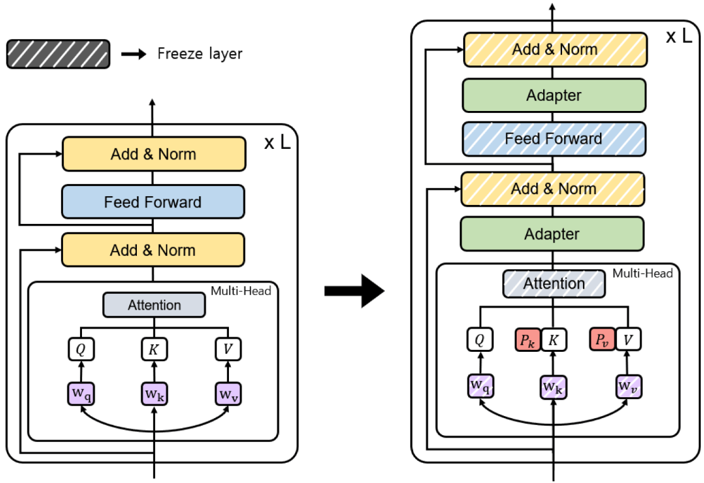

6. Fine Tuning
Fine-tuning is a machine learning technique where a pre-trained model (like a large language model or neural network) is further trained on a smaller, specific dataset to adapt it to a particular task or domain. Instead of training a model from scratch, fine-tuning leverages the knowledge already embedded in the pre-trained model, saving time, computational resources, and data requirements.

The three conventional feature-based and finetuning approaches (Souce Finetuning Sebastian).
6.1. Cutting-Edge Strategies for LLM Fine-Tuning
Over the past year, fine-tuning methods have made remarkable strides. Modern methods for fine-tuning LLMs focus on efficiency, scalability, and resource optimization. The following strategies are at the forefront:
6.1.1. LoRA (Low-Rank Adaptation)
LoRA reduces the number of trainable parameters by introducing low-rank decomposition into the fine-tuning process.

Weight update matrix (Souce LORA Sebastian).
How It Works:
Instead of updating all model weights, LoRA injects low-rank adapters into the model’s layers.
The original pre-trained weights remain frozen; only the low-rank parameters are optimized.
Benefits:
Reduces memory and computational requirements.
Enables fine-tuning on resource-constrained hardware.
6.1.2. QLoRA (Quantized Low-Rank Adaptation)
QLoRA combines low-rank adaptation with 4-bit quantization of the pre-trained model.
How It Works:
The LLM is quantized to 4-bit precision to reduce memory usage.
LoRA adapters are applied to the quantized model for fine-tuning.
Precision is maintained using methods like NF4 (Normalized Float 4) and double backpropagation.
Benefits:
Further reduces memory usage compared to LoRA.
Enables fine-tuning of massive models on consumer-grade GPUs.
6.1.3. PEFT (Parameter-Efficient Fine-Tuning)
PEFT is a general framework for fine-tuning LLMs with minimal trainable parameters.
|  | 
|
{kind=link}
Source: [PEFT]
Techniques Under PEFT:
LoRA: Low-rank adaptation of weights.
Adapters: Small trainable layers inserted into the model.
Prefix Tuning: Fine-tuning input prefixes instead of weights.
Prompt Tuning: Optimizing soft prompts in the input space.
Benefits:
Reduces the number of trainable parameters.
Faster training and lower hardware requirements.
6.1.4. SFT (Supervised Fine-Tuning)
SFT adapts an LLM using a labeled dataset in a fully supervised manner.
How It Works:
The model is initialized with pre-trained weights.
It is fine-tuned on a task-specific dataset with a supervised loss function (e.g., cross-entropy).
Benefits:
Achieves high performance on specific tasks.
Essential for aligning models with labeled datasets.
6.1.5. Summary Table
Method |
Description |
Key Benefit |
LoRA |
Low-rank adapters for parameter-efficient tuning. |
Reduces trainable parameters significantly. |
QLoRA |
LoRA with 4-bit quantization of the model. |
Fine-tunes massive models on smaller hardware. |
PEFT |
General framework for efficient fine-tuning. |
Includes LoRA, Adapters, Prefix Tuning, etc. |
SFT |
Supervised fine-tuning with labeled data. |
High performance on task-specific datasets |
These strategies represent the forefront of LLM fine-tuning, offering efficient and scalable solutions for real-world applications. To choose the most suitable strategy, consider the following factors:
Resource-Constrained Environments: Use LoRA or QLoRA.
Large-Scale Models: QLoRA for low-memory fine-tuning.
High Performance with Labeled Data: SFT.
Minimal Setup: Zero-shot or Few-shot learning.
General Efficiency: Use PEFT frameworks.
6.2. Key Early Fine-Tuning Methods
Early fine-tuning methods laid the foundation for current approaches. These methods primarily focused on updating the entire model or selected components.
6.2.1. Full Fine-Tuning
All the parameters of a pre-trained model are updated using task-specific data The three conventional feature-based and finetuning approaches (Souce Finetuning Sebastian). (right).
How It Works:
The pre-trained model serves as the starting point.
Fine-tuning is conducted on a smaller, labeled dataset using a supervised loss function.
A low learning rate is used to prevent catastrophic forgetting.
Benefits:
Effective at adapting models to specific tasks.
Challenges:
Computationally expensive.
Risk of overfitting on small datasets.
6.2.2. Feature-Based Approach
The pre-trained model is used as a feature extractor, while only a task-specific head is trained The three conventional feature-based and finetuning approaches (Souce Finetuning Sebastian). (left).
How It Works:
The model processes inputs and extracts features (embeddings).
A separate classifier (e.g., linear or MLP) is trained on top of these features.
The pre-trained model weights remain frozen.
Benefits:
Computationally efficient since only the task-specific head is trained.
6.2.3. Layer-Specific Fine-Tuning
Only certain layers of the pre-trained model are fine-tuned while the rest remain frozen The three conventional feature-based and finetuning approaches (Souce Finetuning Sebastian). (middle).
How It Works:
Earlier layers (which capture general features) are frozen.
Later layers (closer to the output) are fine-tuned on task-specific data.
Benefits:
Balances computational efficiency and task adaptation.
6.2.4. Task-Adaptive Pre-training
Before fine-tuning on a specific task, the model undergoes additional pre-training on a domain-specific corpus.
How It Works:
A general pre-trained model is further pre-trained (unsupervised) on domain-specific data.
Fine-tuning is then performed on the downstream task.
Benefits:
Provides a better starting point for domain-specific tasks.
6.3. Embedding Model Fine-Tuning
6.3.1. Results Comparison
Dimension |
Baseline |
Fine-tuned |
Improvement |
|---|---|---|---|
768 |
0.75490 |
0.76503 |
1.34% |
512 |
0.75492 |
0.76040 |
0.73% |
256 |
0.74547 |
0.75474 |
1.24% |
128 |
0.71167 |
0.72053 |
1.24% |
64 |
0.64772 |
0.66091 |
2.04% |